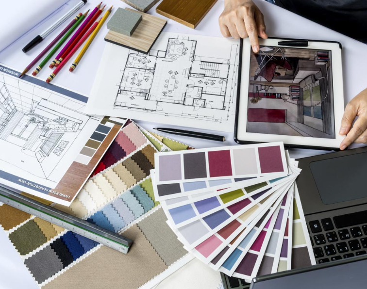

Interior design helps us live more aesthetically pleasing, and contemporary lives. It raises the functionality in our lives and introduces us to beauty and comfort. Additionally, interior design and architecture of a place are what give the building its character. Interior design is what transforms four walls into dynamic space that brims with a life of its own.
Many interior designers prefer hand tools, but where does technology fit in?
This site will look at technological interior design innovations and the future for interior design.
Consumer software
One of the main advantages of interior design software is the ability to visualize design ideas in 3D. This allows users to see exactly what their space will look like before any work is done, which can be useful when trying to visualize the final result of a renovation or redesign. Here are some examples of software in interior design:
SketchUp- a 3D modeling program used for architecture and interior design
Planner 5D- its a program where you are able to start from scratch or use a template which is perfect for throwing together a quick floor plan if you don’t have the time or don’t want to make a complex design.
Floorplanner- lets you design and decorate your space in 2D and 3D, which can be done online and without having to download any software.
SmartDraw- is another powerful tool in the world of floor planning.
HomeByMe-create your floor plan in 2D and furnish your home in 3D with real brand named furniture.
Roomstyler 3D Home Planner- its really similar to homebyme but of all the home design tools, this one has a tutorial video available for every question you might have.
Dulux Visualiser- is a very easy to use app for iOS and Android that transforms the paint colors of any room. All you do is tap on the area you want to see in a different shade, then drop down to the paint chart menus, choose the one you like and see immediately how it looks.
Homebase Kitchen Planner & Design Tool - is a really easy to use online kitchen planner that allows you to see in an instant the transformation of colors and patterns for walls, and work surfaces.
Consumer hardware
Here are some of the hardware in interior design:
Laser Tape Measure-is an alternative to a traditional tape measure that makes the process of measurement more convenient.
Graphic Tablet-It is a compact and portable device, which enables them to sketch no matter where they are.
Stylus pen - is a stylish gadget that is compatible with touch screen devices including iPad, iPhone, Android tablets and phones. It is useful to quickly sketch on a digital medium.
3D pen - it assists the architects to think in the third dimension. Besides cutting on the time elapsed to make a model, it also reduces the labor costs, thus purchasing this gadget is an investment to make.
VR goggles - it has the potential to convince a client that the integration of a concept into a finished blueprint is feasible. Therefore, it can assist in selling an idea along with showcasing it.
Portable color digitizer - interior designers use different colors in their presentations and plan for finishes of surfaces in numerous colors. This gadget is helpful for them because it allows one to pick a color from nature or built surfaces and later use it in their drawings.

Future of Interior Design
An app that while you design your house and furniture you could see the price of everything and it takes you to the website where to buy the furniture. This would make it easier for people to find things they want and that they can afford. And this would be a website that all brands of furniture can use.
AI for Interior Designers
AI cannot replace Interior Designers as a whole as the process is personal and creative, so human connection and interaction is a must. However, AI can serve as a helping hand to interior designers. AI will push creative boundaries, providing unmatched personalization and efficiency.
One of the main benefits of AI in interior design is the potential to make the design process more efficient and cost-effective.
As technology continues to evolve, it is expected that AI-powered interior design tools will become even more advanced and user-friendly. Some potential developments include:
Improved accuracy and realism in generated designs
Integration with virtual and augmented reality technologies
Real-time design updates based on user feedback
Automatic sourcing of furniture and accessories
Virtual Reality
VR is reshaping the future of 3D interior design, taking it to a whole new level. Designers can now walk their clients through all the living spaces they’ve created, enabling them to really feel the interiors. They can get a clear sense of scale, and even test out numerous designs on their own with a simple tap of a button.
VR is not yet fully accessible to the public, as it’s still expensive, but that’s where AR comes in. Augmented Reality enables interior designers to blend the virtual and real worlds by overlaying virtual elements on top of physical features.
VR will take over completely in the near future but, until then, interior experts can rely on AR to create outstanding designs.
Smart Homes
Smart homes have been around for some time, although they’re definitely not mainstream. If you don’t live in an extremely wealthy, tech-savvy society, chances are you haven’t physically come across a smart home yet.
This is going to change in the near future, as full-blown smart homes have made it possible for interiors to become smarter. More and more people are now able to implement smart interior design into their standard homes.You may have various gadgets that make your home smarter, such as AI personal assistants, or various other connected devices.
Smart interiors will soon come pre-built into regular homes, and they’ll only keep getting smarter. We’ll definitely see this trend becoming bigger quite soon.